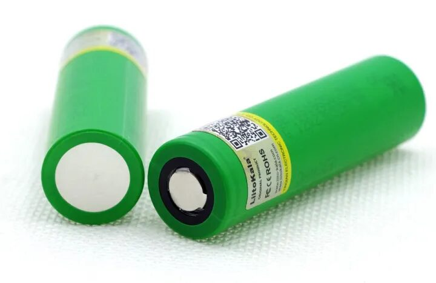
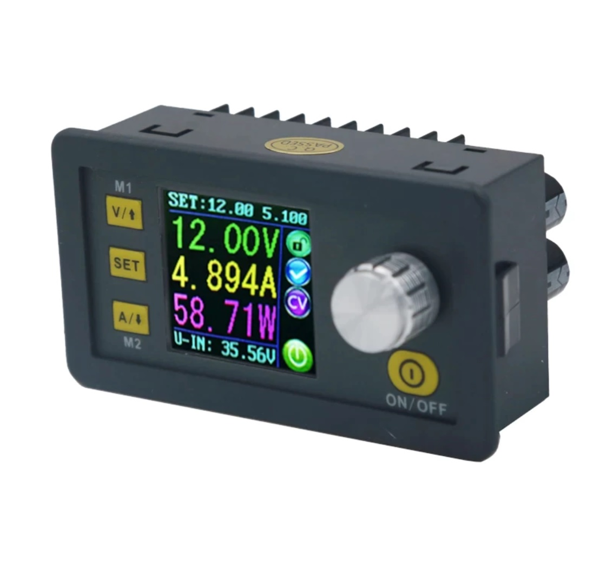

Meter
RDTech TC66C USB-C meter. Live voltage, current and power with charts, the offline recording and firmware update.
Read a USB-C meter, test power banks and control a lab power supply over USB. No install, no server, no account.
This browser has no Web Serial API. Use Chrome or Edge (or Firefox 151+), and open the page from a local file or from localhost/https.
RDTech TC66C USB-C meter. Live voltage, current and power with charts, the offline recording and firmware update.

Measure the real capacity of a power bank with the TC66C. Automatic start and stop, saved tests, CSV and JSON export.

RDTech DPS3005 over Modbus. Set the voltage and the current limit, switch the output, use memory groups and safety limits.